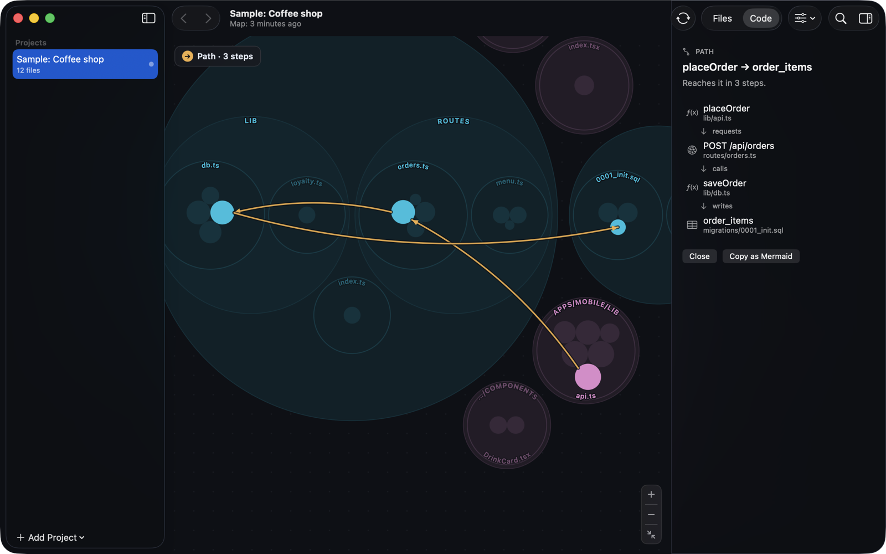
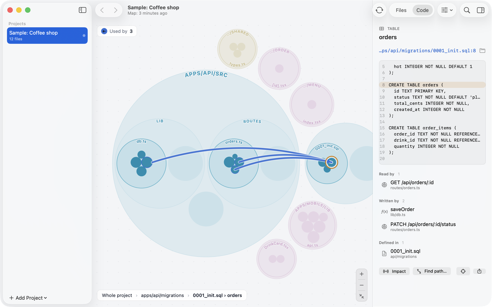

A live map of your codebase. For you and your AI agent.
Every ring is a folder, every circle a file, functions live inside. Click anything to see what it uses and what uses it — from the mobile app, through the API, down to the database.
Free and open source (Apache-2.0) · macOS 14+ on Apple silicon · or brew install --cask bur2ak/tap/mapo
Hover a circle to see its links.
See how a request travels
Mapo links client calls to the routes they hit, and routes to the tables they read and write. Find path shows the whole chain between any two pieces.

Know what breaks
Impact lists everything that depends on a file, function, endpoint or table — direct users first, then theirs.
Always current
The map updates when you save, commit or switch branches. Back and forward, search with ⌘K, jump to your editor.
Stays on your Mac
Analysis runs locally. No account, no upload, no telemetry. Works offline.
Give your agent the map
Connect Claude Code, Codex, Cursor or Claude Desktop in one click. Instead of grepping, your agent asks the map — and gets file paths and line numbers back.
› which endpoints write the orders table? mapo_node orders Written by (2): function saveOrder apps/api/src/lib/db.ts:16 route PATCH /api/orders/:id/status routes/orders.ts:23 › who calls placeOrder? mapo_callers placeOrder function MenuScreen apps/mobile/app/menu/index.tsx:7
Understands your stack
Cross-boundary links are inferred from code patterns and labelled as such — every one points at the line it came from.
| Languages | TypeScript, JavaScript, Python, Swift, Go, Rust, Java, Kotlin and more |
|---|---|
| HTTP | Hono, Express, Fastify, Koa, Elysia, Next.js, Cloudflare Workers and service bindings, FastAPI, Flask, Django · clients via fetch, axios, ky, your own wrappers, requests, httpx |
| RPC | tRPC routers and hooks |
| Databases | SQL migrations (Postgres, SQLite, D1), Prisma, Drizzle, Supabase |
